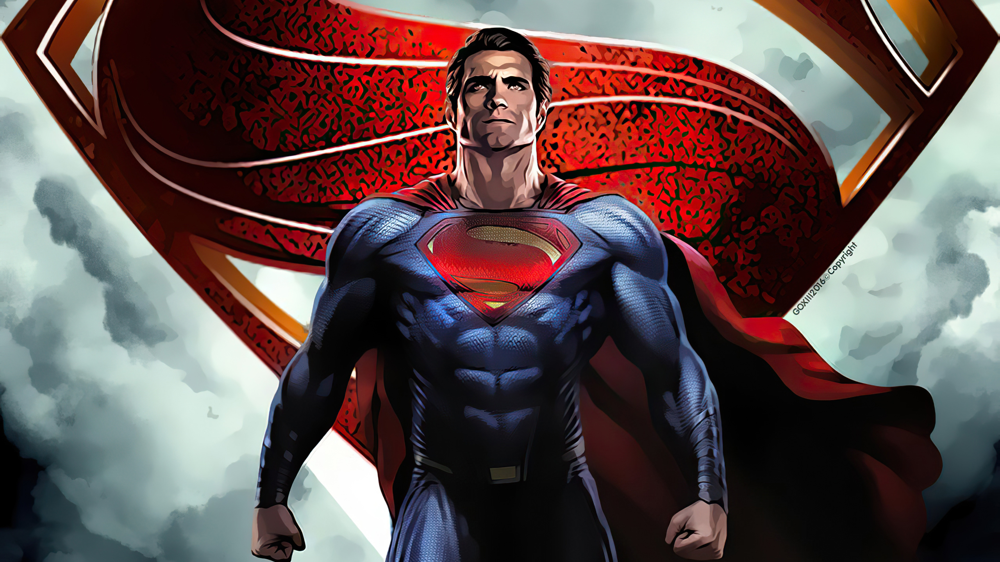
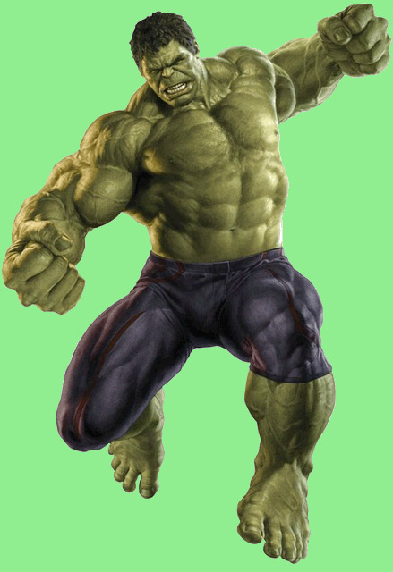

Batman

One of the most iconic fictional characters in the world, Batman has dedicated his life to an endless crusade, a war on all criminals in the name of his murdered parents, who were taken from him when he was just a child. Since that tragic night, he has trained his body and mind to near physical perfection to be a self-made Super Hero. He's developed an arsenal of technology that would put most armies to shame. And he's assembled teams of his fellow DC Super Heroes, like the Justice League, the Outsiders and Batman, Incorporated. A playboy billionaire by day, Bruce Wayne’s double life affords him the comfort of a life without financial worry, a loyal butler-turned-guardian and the perfect base of operations in the ancient network of caves beneath his family’s sprawling estate. By night, however, he sheds all pretense, dons his iconic scalloped cape and pointed cowl and takes to the shadowy streets, skies and rooftops of Gotham City.
Superman
Faster than a speeding bullet, more powerful than a locomotive… The Man of Steel fights a never-ending battle for truth, justice, and the American way. From his blue uniform to his flowing red cape to the "S" shield on his chest, Superman is one of the most immediately recognizable and beloved DC Super Heroes of all time. The Man of Steel is the ultimate symbol of truth, justice, and hope. He is the world's first Super Hero and a guiding light to all. The tip of the spear in a revolution that would change the landscape of pop culture, Superman has spent the last eighty years redefining what it means to stand for truth, justice and the American way. The last survivor of the doomed planet Krypton, raised in the quiet heartland of Smallville, Kansas, Superman is as much a legend as he is a man: the gold standard of heroism, compassion and responsibility.
Spiderman

Spider-Man has spider-like abilities including superhuman strength and the ability to cling to most surfaces. He is also extremely agile and has amazing reflexes. Spider-Man also has a “spider sense,” that warns him of impending danger. Spider-Man has supplemented his powers with technology. Being a brilliant chemist and scientist, Peter has made web-slingers, bracelets that shoot out a sticky webbing, allowing him to swing from building to building and ensnare opponents. He has also developed stingers that shoot powerful energy blasts that can stun foes.
Hulk
Exposed to heavy doses of gamma radiation, scientist Bruce Banner transforms into the mean, green rage machine called the Hulk. Doctor Robert Bruce Banner, M.D., Ph.D., is a renowned scientist and a founding member of the Avengers. Highly respected for his work in biochemistry, nuclear physics and gamma radiation, Banner was tasked by Thaddeus Ross to recreate the Super Soldier Serum that created Captain America. However, Ross elected not to inform Banner what he was creating. During the experiment, Banner substituted vita radiation for gamma radiation and administered the serum on himself. As a result, the mild-mannered scientist found that when angered, provoked or excited, his body and brain would transform into a huge, rage-fueled, primitive-minded creature known as the Hulk.
Iron man

Anthony Edward "Tony" Stark was a billionaire industrialist, a founding member of the Avengers, and the former CEO of Stark Industries. A brash but brilliant inventor, Stark was self-described as a genius, billionaire, playboy, and philanthropist. With his great wealth and exceptional technical knowledge, Stark was one of the world's most powerful men following the deaths of his parents and enjoyed the playboy lifestyle for many years until he was kidnapped by the Ten Rings in Afghanistan, while demonstrating a fleet of Jericho missiles. With his life on the line, Stark created an armored suit which he used to escape his captors. Upon returning home, he utilized several more armors to use against terrorists, as well as Obadiah Stane who turned against Stark. Following his fight against Stane, Stark publicly revealed himself as Iron Man.